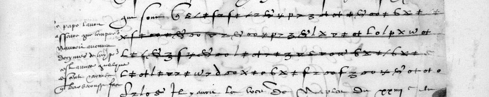
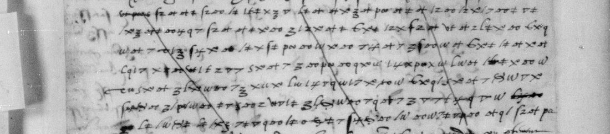

At a glanceKnown key applied · partial (88% of the cipher)
- The letters
- Two despatches of Georges de Selve, bishop of Lavaur and French ambassador at Venice, to Francis I: 5 July 1536 (fr. 3045 ff. 42–49) and 14 September 1535 (fr. 3091 f. 25, DECODE R3697).
- Where
- BnF fr. 3045 and fr. 3091, via Gallica; DECODE R4232 and R3697, both catalogued “Non-decrypted”.
- The cipher
- A simple substitution with an invented sign for each letter, extra signs for a, e and l, and a null placed between doubled letters.
- How it was read
- Tomokiyo’s published key table, applied sign by sign, decrypts the 1536 letter directly (98.5% of its signs fall in French words). The King’s decipherer glossed four runs, and every gloss agrees.
- What it says
- 1536: the Emperor’s reasons for going after Marseille and de Vaulx’s advice to send the fleet towards Naples. 1535: a merchant sent to the French court, under colour of trade, to learn how the King stood with Charles V.
- Credit
- Satoshi Tomokiyo reconstructed the key from the 1536 letter and published it as a table, with no plaintext.
- Still open
- The 1535 letter survives as a soft film scan with several runs struck through (822 of 1,051 non-null signs in French words). The struck runs, a name code probably for Guido Rangone, and a few short groups stay open.
01 The documents and the key
Georges de Selve (1508–1541), son of the first president of the Parlement of Paris and one of the two men in Holbein’s Ambassadors, was Francis I’s ambassador at Venice in 1535–36. Two of his despatches to the King carry cipher:
- DECODE R3697: BnF fr. 3091 f. 25r–v, no. 14, dated at Venice “IIIIe” (DECODE: 14) September 1535. A letter in cleartext with eight cipher runs; four of them are ruled through by the decipherer with the plaintext written above or in the margin. The catalogue card put it in fr. 3045; it is in fr. 3091, in the same volume as letters of Raince and Gramont deciphered earlier in this project.
- DECODE R4232: BnF fr. 3045 ff. 42–49, no. 31, “A Venise, ce cinquiesme de juillet mil cinq cent XXXVI”, signed “G. de Selve e. de Lavaur”. Fourteen pages, cipher on ff. 43v, 44r, 44v, 45r and 48r.
Satoshi Tomokiyo’s cryptiana gives the key as “Selve’s Cipher”, reconstructed from the 1536 letter, and names fr. 3091 f. 25 as the same cipher: a simple substitution with an invented sign for each letter, two signs for a, three for e and three for l, and a null. No text of either letter had been published. Ernest Charrière’s Négociations de la France dans le Levant (vol. I, 1848) prints four other Selve letters of 1535–36, in cleartext; it does not print these two.

The letters themselves add to the table. There are further homophones: a curled d-shaped sign for a, a tall looped sign for f, and a Latin R for o in the 1535 letter. The slash stands for c as well as l, and the two hooks for c and d are used interchangeably, so the French decides. X serves m as well as u. The cipherer also puts a null between doubled letters: Suis·ses, ambas·sadeur, ar·rivé, af·faires, oc·casion. The null is a small p joined to an e-sign, a vf shape, an upright S or a dot. He also writes one in mar·chant and Empe·reur. One six-sign group on f. 44r does not spell anything under the table. The decipherer’s gloss renders it “monsr de Rang…”, so it is a name code, very likely for Guido Rangone.
02 The letter of 5 July 1536
Charles V was then gathering the army with which he would cross the Var into Provence on 25 July. Selve reports what is thought at Venice of his plan. The cipher is shown in roman type, and the clear words that frame it are in brackets.
[… la ville fut] en tres grand danger, combien que le nombre des assiegeans fust sans comparaison moindre que celuy qu’il entend d’y mener. Et comme ainsi soit que ladicte ville soit prenable, comme il en faict son compte, estant une clef de vostre royaulme si importante comme elle est, ce luy semble que, la voyant en dangier, vous vous vouldrez tirer aupres avec vostre puissance pour la secourir. [… son] allee a Marseille sera cause de luy donner l’occasion du combat [qu’il desire … ou bien le tiendra vostre puissance] loing, sans secourir ladicte ville, qu’il en viendra au dessus et la conquestera, [qui est bien la chose que plus il desire, car elle le feroit] patron de la Prouvence, et ne luy resteroit pas beaucop a gaigner pour avoir le passaige franc par terre d’Italie en Espaigne, comodité pour luy si grande qu’il ne la sçauroit cher achapter; et vous leveroit la navigation de la mer Mediterrenée, lequel luy asseureroit Gennes, Naples et Sicille.
[Et quand les predictes raisons que] l’invitent a ladicte entreprise de Marseille, luy semble qu’estant vostre armee de mer dans le port de ladicte ville, qu’elle ne luy peult eschapper, aiant armee de mer plus puissante qui sera suffisante pour la garder de sortir. [Et estant ledict] port tellement exposé a la baterie de ceulx qui seront assis du costé de la montaigne de la Garde, qu’il n’y aura vaisseau qui s’y peusse saulver dedans.
[f. 44v:] [Sire, ledict Sr] de Vaulx est tousiours d’oppinion que pour la sauveté de voz galeres […] de mettre hors vostre armee de mer et l’envoyer vers Naples. [Ce qui … seullement la vous] pourroit conserver, mectant dessus nombre de gens de guerre suffisant.
[f. 45r:] … le retardation n’a esté cause en voz affaires; le bruict qui s’est faict par dela, lequel a mon advis se pourra estre amorty. [… audict] sr(?) de la Forest du [N]e de may […] a l’expresse rupture de la guerre d’entre vous et l’Empereur.
[f. 48r:] … le Pape l’avoit asseuré que l’Empereur n’auroit aucunes decimes de luy pour ceste annee, quelque descente et armee que Barbarousse face.
In English. Marseille would be in great danger even with far fewer besiegers than the army the Emperor means to bring. It can be taken, as he reckons, and it is a key to the kingdom, so he expects the King to march to its relief. That would give him the battle he wants. If the King stays away, he takes the town. Marseille would make him master of Provence and give him a free land road from Italy to Spain, which he could not buy too dearly. It would also take the Mediterranean from France and make Genoa, Naples and Sicily safe for him. His stronger fleet would keep the French galleys shut in the port, and guns on the hill of Notre-Dame-de-la-Garde would leave no ship safe there. De Vaulx advises sending the fleet out towards Naples with enough soldiers aboard. Jean de La Forest, the King’s envoy at the Porte, has written of an open breach with the Emperor. The Pope has promised to grant Charles no clerical tenths that year, whatever landing or fleet Barbarossa brings.

03 The letter of 14 September 1535
fr. 3091 is known only from a black-and-white film scan, and the hand is looser. It needed three passes. The first applied the table as published. The second added the new signs, and the third used the decipherer’s glosses as cribs for the struck runs. DECODE’s own images of the record are screenshots of the same film at lower resolution.
[f. 25r] […] au marchant [gloss: “au marchant”] […] ung sansacque cy prochain [gloss: the same; “a sanjak-bey near here”] …
[Il est force, Sire, qu’il] passe par le chemin des Suisses, car l’aultre ne luy seroit pas seur, a cause que l’ambassadeur qui est [..] ça(?) pour l’Empereur, tost apres que le susdict marchant fust arrivé, comme des l’heure [.]e fus adverty, meu de coniecture qu’il fust venu pour aller en France, a pr[…] Anthon[e](?) de Le[…](?) de luy tenir le guet, pour le retenir s’il passe par …
[… ledict Gueny(?)] marchant, [a]insi [comme …] [….] ambassa[deur] luy avoit dict qu’il seroit bon qu’il trouvast façon, soubz umbre de marchandise ou d’aultre occasion, de faire son voyage en France et aller en vostre court, pour entendre en quelz termes estoient vos affaires avec l’Empereur, et s’il se faisoit point quelque accord entre vous …
[struck; gloss: “Il a consumé ses facultez et la plus part de ses amys … et grand du T[urc](?)”] … ses amis et gran[d] … avoit …
[f. 25v, struck; margin: “en Hongrie — Hiero[nimo] … — amiablement pour la charge qu’il a de Vesprym de la guerre …”] …tretienent(?) amiablement pour la charge qu’il a de Vesprim de la guerre(?) en luy … on fait … contre ses …
[… entreprinse cy dessus,] ne failloient pas d’adviser et faire adviser par d’aultres des occurrances de ça, sans especifier aultrement; entendre, et les advis qu’ilz donnent au Turc, et qu’ilz luy font donner par le marchant susdict, [.] quand en ont quelquefois tenu propos comme d’eux deux(?), [vous] sçaurés(?) …
In English. A merchant must travel to France by the Swiss road, because the other route is not safe for him. As soon as he arrived, the Emperor’s ambassador at Venice guessed that he was going on to France. He asked someone, probably Antonio de Leyva, governor of Milan (the name is not secured), to watch for him and hold him if he came that way. The same Imperial ambassador had earlier told the merchant to find a way, under colour of trade, to go to the King’s court and learn how the King stood with the Emperor, and whether any agreement was being made. The merchant, in other words, was being used as an informant. The verso turns to a Hungarian matter (a Hieronymus and the see of Veszprém) and to persons at Venice who report the news of the place and pass advice to the Turk through the same merchant.

04 Method
The cipher runs were located on the Gallica images and cut into strips of three to five lines. Each page went to a separate transcription pass, which transcribed every sign, applied the table and wrote out the French. Doubtful spots were then checked again on the native files at full resolution: an eleven-sign “verb” on f. 48r is ceste annee with a null in the middle, and a four-sign word on f. 45r is guerre. Wherever the King’s decipherer left a gloss, it was compared letter by letter. On the 1535 letter the glosses also served as cribs, lining the known plaintext up against the struck signs; that is how au marchant, ung sansacque cy prochain and amiablement pour la charge qu’il a de Vesprim were confirmed. Counts are measured on per-sign files, with one character per sign and undecrypted signs marked: 2,248 of 2,481 non-null signs decrypted (90.6%). R4232 is 1,417 of 1,430 plus the glossed name code; R3697 is 831 of 1,051, and 709 of 747 outside the struck runs. A stricter count (sense.py, 5 October 2026) credits only signs inside French words of the period vocabulary: R4232 1,408 of 1,430 (98.5%), R3697 822 of 1,051 (78.2%), both 2,230 of 2,481 (89.9%).
05 What remains
- Reading audit, 22 October 2026. The 1536 letter and the unstruck cipher of the 1535 letter read as French sentences; the decipherer’s struck runs of 1535 (304 signs) give only fragments and are decoded, not read. Signs in text that reads: 2,177 of 2,481 (87.7%). A re-reading the same day took the King’s decipherer’s glosses as the decipherment of the struck runs they cover (
READING_R3697_struck.md): four runs, 169 signs, now carry French clauses word for word from the glosses, checked against the signs where they separate from the strike (“au marchant”, “ung sansacque cy prochain”, “Il a consumé ses facultez et la plus part de ses amys”, “amiablement pour la charge qu’il a de Vesprim de la guerre”). As text they are still fragments (one clause in four clean), so they stay decoded, not read with the other 135 struck signs, which have no legible gloss and need a colour image or the original. Counted word by word on 24 October 2026, the written-out reading of the 1535 letter (R3697) builds coherent sentences but reads at 91.1% of its words, under the 95% a complete reading needs. - Re-measured 5 October 2026. Both letters 2,230 of 2,481 signs inside French words (89.9%). The struck runs of the 1535 letter were tried again on 5 October: Gallica has only the film scan of fr. 3091; the native views were re-fetched and f. 25v and f. 25r re-transcribed at 1.6–2×; removing the strike by a fitted line erases the sign bodies with it; gloss-led candidates (de ses maistres, grand credit, du Turc) do not fit the signs. Nothing moved. 95% would need about 127 more signs and the unstruck gaps hold about 50, so it cannot be reached on these images.
- 1536 letter: 13 single signs, all blots, corrections under the ruling or one slip; none affects the sense. The day in “du [N]e de may” is a figure that the decipherer copied without resolving. The crossed sign before “de la Forest” is taken as an abbreviation for sieur (M). The name code is known only through its gloss (C).
- 1535 letter, struck runs (182 signs): the decipherer’s ruling runs through the middle of every sign, and the film scan cannot separate the two. The glosses give most of the plaintext. The strike ink is lighter than the cipher ink, so a colour image of the leaf would very likely make them legible.
- 1535 letter, f. 25r: the stretch “a pr[…] Anthon[e] de Le[…]” (17 signs). A blot and two cancellation strokes cross four of the signs; Antoine de Leyve fits the sense and the legible shapes, but is not secured (I). Four signs before ambassa[deur], two after est and the first sign of r7 fit no word. Five signs were erased by the writer, and one is a solid blot.
- 1535 letter, f. 25v: the last cipher group before the text breaks into struck clear writing (seven signs), a lone a before quand, and d’eux deux against d’eux vous (M).
- Readings marked (?) in the text above are M or I; everything else is H or C. The sibling fr. 3019 f. 97r (Rodez and Selve, 16 November 1536) carries three short glossed runs in the same cipher, and none of them helps with the open name.
Full texts
The transcription and the decryption of every document on this page, so that the reading can be used and checked. Short files are shown here; all are in the repository.
R3697, BnF fr. 3091 f. 25r-v, Venice, 14 Sept 1535: unstruck cipher (f. 25r r03-r16, f. 25v L1-L5) read in part
Georges de Selve, ambassador at Venice, to Francis I: a merchant must go to France by the Swiss road because the Imperial ambassador at Venice suspects him and has had the other road watched; that ambassador had urged him to go to the French court under colour of trade; on the verso a Hungarian matter (Hieronymus, Veszprém) and informants reporting to the Turk. The runs struck through by the King's decipherer are read only in part.
Builds coherent sentences, but under the read bar of 95% of words read as sense (91% here); the holes are marked in the reading.
Transcription
# R3697 = BnF fr. 3091 f. 25r-v, Selve to Francis I, Venice, 14 Sept 1535. Cipher passages only. # One character per cipher sign: a-z = value as read; . = null; ? = not read (unread, or under the decipherer's strike # and not separable on the film scan). Struck runs (sA, sB, sC1-3, T1-T3) carry contemporary glosses; only signs # whose shape agrees with the key are counted as read. Sources: work/f25r_pass2.md, f25r_pass3.md, f25v_pass2.md, # f25v_pass3.md. Struck runs are laid out as read letters plus ? for the rest of the agents' per-strip counts. sA aumar.chant sB ?n??a?sa????ecyprochain???? r03 passeparlechemindessuis.sescarlaultrene r04 luyseroitpasseuracausequelambas.sadeurqui r05 est??lapourlempe.reurtostapresquelesus r06 dictmar.chantfustar.rivecom.medeslheure r07 ?efusadvertymeudeconiecturequilfustvenu r08 pourallerenfra.ncea????????????ton. r09 ?dele???deluytenirleguetpourleretenirsilpassepa r10 mar.chantin?? r11 ????ambas.saluyavoitdictquilseroitbonquiltro r12 u.vastfaconsoubzumbre.demarchandiseoudaultre r13 oc.casiondefairesonvoyageenfra.nceetal.lerenvo r14 strecourtpourentendreenquelztermesestoient r15 vosaf.fairesaveclempe.reuretsilse.faisoitpoint r16 quelqueac.cordentre.vous????? sC1 ??????????????????????????????????????????????????????? sC2 sesamisetgran???????????????????????????avoit???? sC3 ????????? T1 ?????????????????????????tretienent T2 amiablementpourlachargequiladevesprimdelaguerreenluy???????????? T3 onfait??????????la??????????contreses?????????????????? L1 nefailloientpasdadviseretfaireadviserpardaultresdes L2 oc.cur.rancesdecasansespecifieraultremententendre L3 etlesadvisquilzdonnentautu.rcetquilzluyfontdonner L4 parlemarchantsusdict?quandenontquelquefois L5 tenuproposcommedeuxdeusscaure.s???????
Decryption
# R3697 — Georges de Selve to Francis I, Venice, 14 Sept 1535 (BnF fr. 3091 f. 25r–v, no. 14) The BnF catalogue dates it "IIIIe de septembre 1535"; DECODE has 14 Sept. Gallica btv1b9060253s views 27 (right half = f. 25r) and 28 (left half = f. 25v); the only images are a soft black-and-white film scan. Per-sign file: `R3697_signs.txt` (1,076 signs: unstruck cipher 94.9% read, struck runs 40%, whole 79.1%). Work files: `work/f25r*.md`, `work/f25v*.md` (three passes each). Cipher in plain type, clear text in [brackets]; [..] = unread signs; (?) = doubtful. Several cipher runs were ruled through by the King's decipherer, who wrote the plaintext above or in the margin; those glosses are quoted. ## f. 25r [Sire, je feis … au] marchant [gloss: "au marchant"], [duquel je vous ay … escript …] [… Gueny(?)] ung sansacque cy prochain [….] [gloss: "ung sansacque cy prochain"] (a sanjak-bey near here) [Il est force, Sire, qu'il] passe par le chemin des Suisses, car l'aultre ne luy seroit pas seur, a cause que l'ambassadeur qui est [..] ça(?) pour l'Empereur, tost apres que le susdict marchant fust arrivé, comme des l'heure [.]e fus adverty, meu de coniecture qu'il fust venu pour aller en France, a pr[.............] Anthon[e](?) de Le[…](?) de luy tenir le guet, pour le retenir s'il passe par … [Sire, je vous ay bien adverty par … ledict Gueny(?)] marchant, [a]insi [comme j'ay faict par plusieurs foys … Il luy est party de … que] [....] ambassa[deur] luy avoit dict qu'il seroit bon qu'il trouvast façon, soubz umbre de marchandise ou d'aultre occasion, de faire son voyage en France et aller en vostre court, pour entendre en quelz termes estoient vos affaires avec l'Empereur, et s'il se faisoit point quelque accord entre vous [5 signs erased by the writer] … [struck run, gloss: "Il a consumé ses facultez et la plus part de ses amys […] et grand du T[urc](?)"; beside the next line "… Hieronymus"] … ses amis et gran[d] [….] avoit … ## f. 25v [… me semble que est bonne sorte. Quand depu(is)] [struck: …] (l'en)tretienent(?) amiablement pour la charge qu'il a de Vesprim de la guerre(?) en luy […] on fait […] la […] contre ses […] [margin, contemporary decipherment: "en Hongrie — Hiero[nimo] … — amiablement pour la charge qu'il a de Vesprym de la guerre, en luy on fait s.. fond.. contre ses ad.."] [… entreprinse cy dessus,] ne failloient pas d'adviser et faire adviser par d'aultres des occurrances de ça, sans especifier aultrement; entendre, et les advis qu'ilz donnent au Turc, et qu'ilz luy font donner par le marchant susdict, [a] quand en ont quelquefois tenu propos comme d'eux deux(?), [vous] sçaurés(?) [.......] [pour continuer le propos dudict Duc …] ## English gist A merchant (Gueny?; a struck run nearby mentions "a sanjak-bey near here") has to travel to France by the Swiss road: the Emperor's ambassador at Venice guessed as soon as he arrived that he meant to go to France and asked someone — probably Antonio de Leyva, governor of Milan (read "Anthon[e] de Le…", not secured) — to watch the other road and seize him. The same Imperial ambassador had urged the merchant to find a way, under colour of trade, to go to the French court and learn how the King stood with the Emperor and whether any agreement was being made between them: the merchant was being used as an Imperial informant. On the verso, a man in Hungary (Hieronymus; a bishopric of Veszprém) is being kept friendly; and certain persons at Venice kept reporting news from here without saying more, and what advice they give the Turk, and have the merchant pass to him. ## Open - Struck runs (182 signs): the decipherer's ruling crosses every sign at the film scan's resolution; the glosses give most of the content (externally blocked: a colour image or the original is needed). - f. 25r r8–r9, 17 signs around "a pr… Anthon[e] de Le…": legible in part, not secured; r11 four signs before "ambassa[deur]"; r5 two signs; r7 one sign with no key value; r16 five signs erased by the writer; r9 one blot. - f. 25v L5: the last group before the clear text, and "d'eux deux" vs "d'eux vous".
Reading
<!-- Reading of R3697, the unstruck cipher only (BnF fr. 3091 f. 25r r03-r16, f. 25v L1-L5), Claude Opus 5.5, 23 Oct 2026 (verify pass v8). Running text taken from READING_R3697.md (Tomokiyo's Selve key as extended in KEY.md; per-sign file R3697_signs.txt), with its clear-text brackets, the decipherer's glosses and the struck runs (READING_R3697_struck.md, a separate entry, decoded, not read) cut. Holes: [?] an unread sign or group; [?word] a doubtful word (READING_R3697.md's "(?)"); letters supplied inside a word in [ ]. Spelling as the signs give it; punctuation added. --> # R3697, Georges de Selve to Francis I, Venice, 14 Sept 1535: reading of the unstruck cipher ## Reading qu'il passe par le chemin des Suisses, car l'aultre ne luy seroit pas seur, a cause que l'ambassadeur qui est [?] [?ça] pour l'Empereur, tost apres que le susdict marchant fust arrivé, comme des l'heure [?]e fus adverty, meu de coniecture qu'il fust venu pour aller en France, a [?pr] [?] [?Anthone] de [?Le] de luy tenir le guet, pour le retenir s'il passe par. marchant, [a]insi [?] ambassa[deur] luy avoit dict qu'il seroit bon qu'il trouvast façon, soubz umbre de marchandise ou d'aultre occasion, de faire son voyage en France et aller en vostre court, pour entendre en quelz termes estoient vos affaires avec l'Empereur, et s'il se faisoit point quelque accord entre vous [?]. ne failloient pas d'adviser et faire adviser par d'aultres des occurrances de ça, sans especifier aultrement; entendre, et les advis qu'ilz donnent au Turc, et qu'ilz luy font donner par le marchant susdict, [a] quand en ont quelquefois tenu propos comme d'eux [?deux], [vous] [?sçaurés] [?]. ## Score `research/reading_audit/v2_score.py R3697_reading.md fr`: plain 0.667 (10/15), explicit holes 0.733 (11/15), hole rate 0.089, 179 words (23 Oct 2026). With the clear-text leads of READING_R3697.md kept as running text: 0.562 plain, 0.688 explicit holes.
Translation
# R3697, Georges de Selve to Francis I, Venice, 14 Sept 1535: English translation of the unstruck cipher Translated from `R3697_reading.md` (Claude Opus 5.5, 23 Oct 2026): the unstruck cipher of BnF fr. 3091 f. 25r-v, deciphered with Tomokiyo's Selve key as extended in `KEY.md`. The clear text of the letter, the decipherer's glosses and the struck runs (`READING_R3697_struck.md`, `R3697_struck_en.md`) are not part of this entry. Holes as in the reading: `[?]` an unread sign or group, `[?word]` a doubtful word, letters supplied inside a word in [ ]. The three paragraphs are three separate cipher runs; each begins in mid-sentence after clear text. ## Translation … that he should go by the road of the Swiss, for the other would not be safe for him, because the ambassador who is [?] [?here] for the Emperor, soon after the aforesaid merchant had arrived, as I was informed from that very hour, moved by a conjecture that he had come in order to go to France, [?pr] [?] [?Anthone] de [?Le] to keep watch for him, so as to hold him back if he passes through. … merchant, [and] so [?] ambassa[dor] had told him that it would be good for him to find a way, under colour of trade or of some other occasion, to make his journey to France and go to your court, to learn on what terms your affairs stood with the Emperor, and whether some agreement was not being made between you [?]. … they did not fail to send word, and to have word sent by others, of what happens here, without specifying further; to learn, and the reports they give to the Turk, and that they have given to him by the aforesaid merchant, [and] when they have sometimes talked of it as from themselves [?two], [you] [?will know] [?].
R3697, BnF fr. 3091 f. 25r-v: the struck runs with no legible gloss (C2 after "et gran[d]", C3, T1, T3; 135 signs) decoded, not read
A mechanical decode with holes in most sentences: shown so that the transcription and the key can be checked and improved, not as a reading.
Transcription
# R3697 = BnF fr. 3091 f. 25r-v, Selve to Francis I, Venice, 14 Sept 1535. Cipher passages only. # One character per cipher sign: a-z = value as read; . = null; ? = not read (unread, or under the decipherer's strike # and not separable on the film scan). Struck runs (sA, sB, sC1-3, T1-T3) carry contemporary glosses; only signs # whose shape agrees with the key are counted as read. Sources: work/f25r_pass2.md, f25r_pass3.md, f25v_pass2.md, # f25v_pass3.md. Struck runs are laid out as read letters plus ? for the rest of the agents' per-strip counts. sA aumar.chant sB ?n??a?sa????ecyprochain???? r03 passeparlechemindessuis.sescarlaultrene r04 luyseroitpasseuracausequelambas.sadeurqui r05 est??lapourlempe.reurtostapresquelesus r06 dictmar.chantfustar.rivecom.medeslheure r07 ?efusadvertymeudeconiecturequilfustvenu r08 pourallerenfra.ncea????????????ton. r09 ?dele???deluytenirleguetpourleretenirsilpassepa r10 mar.chantin?? r11 ????ambas.saluyavoitdictquilseroitbonquiltro r12 u.vastfaconsoubzumbre.demarchandiseoudaultre r13 oc.casiondefairesonvoyageenfra.nceetal.lerenvo r14 strecourtpourentendreenquelztermesestoient r15 vosaf.fairesaveclempe.reuretsilse.faisoitpoint r16 quelqueac.cordentre.vous????? sC1 ??????????????????????????????????????????????????????? sC2 sesamisetgran???????????????????????????avoit???? sC3 ????????? T1 ?????????????????????????tretienent T2 amiablementpourlachargequiladevesprimdelaguerreenluy???????????? T3 onfait??????????la??????????contreses?????????????????? L1 nefailloientpasdadviseretfaireadviserpardaultresdes L2 oc.cur.rancesdecasansespecifieraultremententendre L3 etlesadvisquilzdonnentautu.rcetquilzluyfontdonner L4 parlemarchantsusdict?quandenontquelquefois L5 tenuproposcommedeuxdeusscaure.s???????
Decryption
<!-- R3697 (BnF fr. 3091 f. 25r-v, Selve to Francis I, Venice, 14 Sept 1535): the runs the King's decipherer struck
through and glossed. Built 22 Oct 2026 by Claude Opus 5.5 (re-read, batch mix1) from the decipherer's own interlinear
and marginal glosses, read on the native Gallica film scan (img/native_f27.jpg, native_f28.jpg; work/f25r_pass3.md,
work/f25v_pass3.md), and checked against the struck signs wherever they separate from the strike (R3697_signs.txt).
The gloss is a contemporary decipherment; where it is legible the reading follows it. ⟨ ⟩ = clear text around the run;
[?word] = partly carried; […] = unread. -->
# R3697, the struck runs read from the decipherer's glosses
## Read (glossed runs: A, B, C1 with the head of C2, T2; 169 signs)
**Run A (f. 25r line 3):** ⟨Sire, je feis … pour⟩ au marchant, ⟨duquel je vous ay … escript⟩.
Gloss "au marchant"; the eleven signs under the strike agree with the key (a u | m a r · c h a n t).
**Run B (f. 25r line 8):** [?ung] sansacque cy prochain […].
Gloss "ung sansacque cy prochain" ("a sanjak-bey near here"); "prochain" agrees sign for sign, "cy" and the a, n, e of
"sansacque" agree; the four signs after "prochain" have no gloss.
**Run C1 + head of C2 (foot of f. 25r):** Il a consumé ses facultez et la plus part de ses amys […] et grand du
T[urc].
Gloss above C1 (one line for both struck lines). On the signs: C1 does not separate from the strike; C2 reads "ses amis
et gran[d]" by the key, as the gloss has it.
**Run T2 (f. 25v, second struck line):** [?l'entretiennent] amiablement pour la charge qu'il a de Vesprim de la
[?guerre] en luy.
Marginal decipherment ("amiablement — pour la charge qu'il a de Vesprym de la guerre, en luy …"); "amiablement",
"pour", "la", "qu'il", "de", "de la", "en luy" agree sign for sign (about 50 of 64 signs); the c of charge, the a,
and the g of guerre are lost under the strike or a blot. "l'entretiennent" is the tail of T1 (signs, medium-low).
## Not read (135 signs)
- C2 after "et gran[d]" (36 signs): `W ɦ ‡ ot ω ot x z q ꝏ ot ‡ / ꝏ ʒ 7 ‡ ot ꝏ L 4 p / / ω ot` … **avoit** … ; the gloss's
"du T[urc]" does not align and the words after "amys" in the gloss are blurred.
- C3 (9 signs): "[g]uerr[.]s(?)", not secured; no gloss.
- T1 before "-tretienent" (25 signs): no gloss line matches; the margin's first two lines ("en Hongrie", "Hiero[nimo]
…") cannot be placed in the signs.
- T3 (55 signs): "on fait […] la […] contre ses […]"; the margin's "s[..] fond[..]" and "ad[..]" are not legible and
do not align with any value set.
## In English
Run A: "… to the merchant, of whom I have written to you …". Run B: "a sanjak-bey near here". C: "He has consumed his
means and most of his friends […] and great [man] of the Turk". T2: "[they treat him] amicably on account of the
charge he holds of Veszprém, of the war, in him …".R4232, BnF fr. 3045 ff. 42-49, Venice, 5 July 1536
Selve to Francis I on the Emperor's plan against Marseille (key to the kingdom; master of Provence, a land road Italy-Spain, the Mediterranean; the French galleys trapped in the port under the guns of La Garde), de Vaulx's advice to send the fleet towards Naples, La Forest's news from the Porte of an open breach with the Emperor, and the Pope's refusal of tenths to Charles. Four runs glossed by the King's decipherer agree with the reading.
Transcription
# R4232 = BnF fr. 3045 ff. 42-49, Selve to Francis I, Venice, 5 July 1536. Cipher passages only. # One character per cipher sign: a-z = the sign's value as read; . = null; ? = sign not read; # N = the day numeral (a figure, not a cipher sign); 6 signs of the name code are written ###### (read from the # interlinear gloss "mons^r de Rang.."). Doubtful choices between two values are resolved to the one the French needs. # Line labels: view (Gallica btv1b9060156p) and line. Source: work/v84.md ... v94.md and their Resolution sections. v84l01 .entresgrand.dangercombienqu v84l02 elenombredesassiegeansfust?sans v84l03 comparaisonmoindrequeceluyquil v84l04 entend.dymeneretcommeainsisoitque v84l05 ladictevillesoitprenablecommeilenfaic v84l06 tsoncompteestantuneclefdevostre. v84l07 royaulmesi?importantecommeellest v84l08 cel.luysemblequelavoyantendangier v84l09 vousvousvouldrestireraupres v84l10 avecvostrepuissancepourlasecou v84l11 rir v84l12 alleeamarseil v84l13 leseracausedeluydonnerloc.casion v84l14 ducombat v84l15 loing v84l16 sanssecourirladictevil.lequilenvi v84l17 endraaudessusetlaconquestera v84l18 patrondelaprouvenceetneluyrester v85l01 oitpasbeaucopagaignerpouravoirle v85l02 passaigefrancparterre?ditalieene v85l03 spaignecomoditepourluisigrandequil v85l04 nelascauroitcherachapteretvouslev v85l05 eroitlanavigationdelamermediterr v85l06 enelequeluy??asseureroitgennesna v85l07 plesetsicille.? v85l08 linvit?entaladict v85l09 entreprisedemarseil.leluysemble v85l10 questantvostrearmeedemerdansle v85l11 portdeladictevillequellenelupeultes v85l12 chapperaiantarmeedemerpluspuissan v85l13 tequiserasuffisantepourlagarder v85l14 desortire v85l15 porttellemente v85l16 xposealabateriedeceulxquiserontas v85l17 sisducostedelamontaignedelagar v85l18 dequilniauravaisseauquisyp?eus v85l19 sesaulve?dedans v85l20 monsieurde######. v86l01 devaulxes?tousioursdop.pin v86l02 ionquepourlasauvetedevozgaleres v86l03 demettrehorsvos?trearmedemeret v86l04 lenvoyerversnaples v86l05 pourroitconservermectant v86l06 dessusnombredegensdeguerresu v86l07 ffisant v88l01 retardatio v88l02 naestcauseenvozaf.faireslebru v88l03 ictquisestfaictpardelalequelamonad v88l04 vissepourraestreamorty v88l05 ?dela.forestduNdemay v88l08 alexpresserou v88l09 pt.uredelaguerredentre.vouset v88l10 lempereurs v94l06 ?.lepapelavoitasseurequele v94l07 mpereurnauroitaucunesdecimes v94l08 deluypourceste.anneequelque. v94l09 descenteetarmeequebarbarousse v94l10 face
Decryption
# R4232 — Georges de Selve to Francis I, Venice, 5 July 1536 (BnF fr. 3045 ff. 42–49, no. 31) Reading of the cipher passages, in the flow of the letter. Clear text in [brackets], cipher in plain type. Per-sign file: `R4232_signs.txt` (1,448 signs; 99.1% of non-null signs read). Line-by-line work: `work/v84.md` … `work/v94.md`. Gallica btv1b9060156p views 82–95 (f. 42r = view 82). Setting: Charles V had invaded Provence (crossing the Var on 25 July 1536); in early July his army was gathering in Piedmont and Liguria. Selve reports what is said at Venice of the Emperor's plan. ## f. 43v (view 84) – f. 44r (view 85): the Emperor's design on Marseille […] [ville fut] en tres grand danger, combien que le nombre des assiegeans fust sans comparaison moindre que celuy qu'il entend d'y mener. Et comme ainsi soit que ladicte ville soit prenable, comme il en faict son compte, estant une clef de vostre royaulme si importante comme elle est, ce luy semble que, la voyant en dangier, vous vous vouldrez tirer aupres avec vostre puissance pour la secourir. [Tourlucan(?) ainsy que son(?)] allee a Marseille sera cause de luy donner l'occasion du combat [qu'il desire, pour sortir de ce pays dont il se treuve chargé, ou bien le tiendra vostre puissance] loing, sans secourir ladicte ville, qu'il en viendra au dessus et la conquestera, [qui est bien la chose que plus il desire, car elle le feroit] patron de la Prouvence, et ne luy resteroit pas beaucop a gaigner pour avoir le passaige franc par terre d'Italie en Espaigne, comodité pour luy si grande qu'il ne la sçauroit cher achapter; et vous leveroit la navigation de la mer Mediterrenée, lequel luy asseureroit Gennes, Naples et Sicille. [Et quand les predictes raisons que] l'invitent a ladicte entreprise de Marseille, luy semble qu'estant vostre armee de mer dans le port de ladicte ville, qu'elle ne luy peult eschapper, aiant armee de mer plus puissante qui sera suffisante pour la garder de sortir. [Et estant ledict] port tellement exposé a la baterie de ceulx qui seront assis du costé de la montaigne de la Garde, qu'il n'y aura vaisseau qui s'y peusse saulver dedans. [… au S(ieu)r] monsieur de ⟨name code, glossed "Rang…": Guido Rangone⟩ [fugitifs(?) …] ## f. 44v (view 86): the galleys [Sire, ledict S(ieu)r] de Vaulx est tousiours d'oppinion que pour la sauveté de voz galeres [… two clear lines …] de mettre hors vostre armee de mer et l'envoyer vers Naples. [Ce qui … seullement la vous] pourroit conserver, mectant dessus nombre de gens de guerre suffisant. (Contemporary decipherment in the left margin, word for word the same.) ## f. 45r (view 88): the delay; La Forest; the breach […] le retardation n'a esté cause en voz affaires; le bruict qui s'est faict par dela, lequel a mon advis se pourra estre amorty. [… audict] s(ieu)r(?) de la Forest du [N]ᵉ de may [… sera faict …] a l'expresse rupture de la guerre d'entre vous et l'Empereur, [… rupture de guerre …] (Margin and interlinear decipherments for the first two runs; the third run has none.) ## f. 48r (view 94): the Pope and the tenths […] le Pape l'avoit asseuré que l'Empereur n'auroit aucunes decimes de luy pour ceste annee, quelque descente et armee que Barbarousse face. (Contemporary decipherment in the left margin: "Le pape lavoit asseure que lempereur n'auroit aucunes decymes de luy pour a?hanner(?) quelque descente & armee que Barberousse far[a]"; its doubtful word is read here as "cest annee", which the cipher gives). ## English gist The Emperor means to besiege Marseille, a key to the kingdom, reckoning either that Francis will come to relieve it and give him the pitched battle he wants, or will stay away and let it fall; with Marseille he would be master of Provence, have a free land route from Italy to Spain, take the Mediterranean from France and secure Genoa, Naples and Sicily. With his stronger fleet he expects to bottle up the French galleys in Marseille harbour, which guns on the hill of Notre-Dame-de-la-Garde would command. De Vaulx advises sending the French fleet out towards Naples with enough soldiers aboard. A rumour about the delay will die down; news from La Forest (the French envoy at the Porte) of [N] May bears on an open breach of the peace between Francis and the Emperor. The Pope has assured Selve that he will grant the Emperor no clerical tenths this year, whatever landing or fleet Barbarossa may bring. ## Open signs 13 single signs (blots, corrections under the ruling, a slip Ƶ, a struck sign) — none alters the sense; the name code "/ X ʒ X / X" (6 signs) is read only through the gloss; the day numeral of La Forest's letter is copied by the glossator unresolved; one crossed sign before "de la Forest" is taken as an abbreviation for "sieur" (probable).
Translation
<!-- English translation of READING_R4232.md (Claude Opus 5.5, 23 Oct 2026): the cipher passages of Georges de Selve's letter of 5 July 1536 in the flow of the letter, cipher in plain type and the clear text around it in [brackets], as there; […] = clear text not transcribed or unread; (?) doubtful. The contemporary marginal decipherments agree with the reading as noted there. --> # R4232, Georges de Selve to Francis I, Venice, 5 July 1536 (BnF fr. 3045 ff. 42-49): English translation of the cipher passages ## f. 43v – f. 44r: the Emperor's design on Marseille […] [the town was] in very great danger, although the number of the besiegers was beyond comparison smaller than the one he means to bring there. And since the said town is takeable, as he reckons, being a key of your kingdom as important as it is, it seems to him that, seeing it in danger, you will want to draw near with your forces to relieve it. [Tourlucan(?), as his(?)] going to Marseille will give him the occasion of the battle [that he desires, to get out of this country with which he finds himself burdened; or else your forces will keep him] far off, without relieving the said town, so that he will get the better of it and conquer it, [which is indeed the thing he most desires, for it would make him] master of Provence, and there would not remain much for him to gain to have free passage by land from Italy to Spain, an advantage so great for him that he could not buy it too dear; and it would take from you the navigation of the Mediterranean Sea, which would secure him Genoa, Naples and Sicily. [And besides the aforesaid reasons that] invite him to the said enterprise of Marseille, it seems to him that, your fleet being in the harbour of the said town, it cannot escape him, as he has a more powerful fleet which will be enough to keep it from coming out. [And the said] harbour being so exposed to the battery of those who will be posted on the side of the hill of La Garde, that there will be no vessel that could save itself inside it. [… to the Sieur] Monsieur de ⟨name code, glossed "Rang…": Guido Rangone⟩ [fugitives(?) …] ## f. 44v: the galleys [Sire, the said Sieur] de Vaulx is still of the opinion that for the safety of your galleys [… two clear lines …] to put your fleet out and send it towards Naples. [Which … alone could] preserve it for you, putting on board a sufficient number of men of war. ## f. 45r: the delay; La Forest; the breach […] the delay has not been a cause in your affairs; the rumour that has been made over there, which in my opinion may be quieted. [… to the said] sieur(?) de la Forest of the [N]th of May [… will be done …] to the express breach of the war between you and the Emperor, [… breach of war …] ## f. 48r: the Pope and the tenths […] the Pope had assured him that the Emperor would have no tenths from him for this year, whatever landing and fleet Barbarossa may make.
R3697, BnF fr. 3091 f. 25r-v: the struck runs glossed by the King’s decipherer (f. 25r A, B, C1 with the head of C2; f. 25v T2) decoded, not read
Read from the decipherer’s interlinear and marginal glosses, checked against the struck signs where they separate from the strike: "au marchant"; "ung sansacque cy prochain"; "Il a consumé ses facultez et la plus part de ses amys [...] et grand du T[urc]"; "amiablement pour la charge qu’il a de Vesprim de la guerre en luy".
A mechanical decode with holes in most sentences: shown so that the transcription and the key can be checked and improved, not as a reading.
Transcription
# R3697 = BnF fr. 3091 f. 25r-v, Selve to Francis I, Venice, 14 Sept 1535. Cipher passages only. # One character per cipher sign: a-z = value as read; . = null; ? = not read (unread, or under the decipherer's strike # and not separable on the film scan). Struck runs (sA, sB, sC1-3, T1-T3) carry contemporary glosses; only signs # whose shape agrees with the key are counted as read. Sources: work/f25r_pass2.md, f25r_pass3.md, f25v_pass2.md, # f25v_pass3.md. Struck runs are laid out as read letters plus ? for the rest of the agents' per-strip counts. sA aumar.chant sB ?n??a?sa????ecyprochain???? r03 passeparlechemindessuis.sescarlaultrene r04 luyseroitpasseuracausequelambas.sadeurqui r05 est??lapourlempe.reurtostapresquelesus r06 dictmar.chantfustar.rivecom.medeslheure r07 ?efusadvertymeudeconiecturequilfustvenu r08 pourallerenfra.ncea????????????ton. r09 ?dele???deluytenirleguetpourleretenirsilpassepa r10 mar.chantin?? r11 ????ambas.saluyavoitdictquilseroitbonquiltro r12 u.vastfaconsoubzumbre.demarchandiseoudaultre r13 oc.casiondefairesonvoyageenfra.nceetal.lerenvo r14 strecourtpourentendreenquelztermesestoient r15 vosaf.fairesaveclempe.reuretsilse.faisoitpoint r16 quelqueac.cordentre.vous????? sC1 ??????????????????????????????????????????????????????? sC2 sesamisetgran???????????????????????????avoit???? sC3 ????????? T1 ?????????????????????????tretienent T2 amiablementpourlachargequiladevesprimdelaguerreenluy???????????? T3 onfait??????????la??????????contreses?????????????????? L1 nefailloientpasdadviseretfaireadviserpardaultresdes L2 oc.cur.rancesdecasansespecifieraultremententendre L3 etlesadvisquilzdonnentautu.rcetquilzluyfontdonner L4 parlemarchantsusdict?quandenontquelquefois L5 tenuproposcommedeuxdeusscaure.s???????
Decryption
<!-- R3697 (BnF fr. 3091 f. 25r-v, Selve to Francis I, Venice, 14 Sept 1535): the runs the King's decipherer struck
through and glossed. Built 22 Oct 2026 by Claude Opus 5.5 (re-read, batch mix1) from the decipherer's own interlinear
and marginal glosses, read on the native Gallica film scan (img/native_f27.jpg, native_f28.jpg; work/f25r_pass3.md,
work/f25v_pass3.md), and checked against the struck signs wherever they separate from the strike (R3697_signs.txt).
The gloss is a contemporary decipherment; where it is legible the reading follows it. ⟨ ⟩ = clear text around the run;
[?word] = partly carried; […] = unread. -->
# R3697, the struck runs read from the decipherer's glosses
## Read (glossed runs: A, B, C1 with the head of C2, T2; 169 signs)
**Run A (f. 25r line 3):** ⟨Sire, je feis … pour⟩ au marchant, ⟨duquel je vous ay … escript⟩.
Gloss "au marchant"; the eleven signs under the strike agree with the key (a u | m a r · c h a n t).
**Run B (f. 25r line 8):** [?ung] sansacque cy prochain […].
Gloss "ung sansacque cy prochain" ("a sanjak-bey near here"); "prochain" agrees sign for sign, "cy" and the a, n, e of
"sansacque" agree; the four signs after "prochain" have no gloss.
**Run C1 + head of C2 (foot of f. 25r):** Il a consumé ses facultez et la plus part de ses amys […] et grand du
T[urc].
Gloss above C1 (one line for both struck lines). On the signs: C1 does not separate from the strike; C2 reads "ses amis
et gran[d]" by the key, as the gloss has it.
**Run T2 (f. 25v, second struck line):** [?l'entretiennent] amiablement pour la charge qu'il a de Vesprim de la
[?guerre] en luy.
Marginal decipherment ("amiablement — pour la charge qu'il a de Vesprym de la guerre, en luy …"); "amiablement",
"pour", "la", "qu'il", "de", "de la", "en luy" agree sign for sign (about 50 of 64 signs); the c of charge, the a,
and the g of guerre are lost under the strike or a blot. "l'entretiennent" is the tail of T1 (signs, medium-low).
## Not read (135 signs)
- C2 after "et gran[d]" (36 signs): `W ɦ ‡ ot ω ot x z q ꝏ ot ‡ / ꝏ ʒ 7 ‡ ot ꝏ L 4 p / / ω ot` … **avoit** … ; the gloss's
"du T[urc]" does not align and the words after "amys" in the gloss are blurred.
- C3 (9 signs): "[g]uerr[.]s(?)", not secured; no gloss.
- T1 before "-tretienent" (25 signs): no gloss line matches; the margin's first two lines ("en Hongrie", "Hiero[nimo]
…") cannot be placed in the signs.
- T3 (55 signs): "on fait […] la […] contre ses […]"; the margin's "s[..] fond[..]" and "ad[..]" are not legible and
do not align with any value set.
## In English
Run A: "… to the merchant, of whom I have written to you …". Run B: "a sanjak-bey near here". C: "He has consumed his
means and most of his friends […] and great [man] of the Turk". T2: "[they treat him] amicably on account of the
charge he holds of Veszprém, of the war, in him …".Reading
<!-- R3697 (BnF fr. 3091 f. 25r-v, Selve to Francis I, Venice, 14 Sept 1535): the runs the King's decipherer struck
through and glossed. Built 22 Oct 2026 by Claude Opus 5.5 (re-read, batch mix1) from the decipherer's own interlinear
and marginal glosses, read on the native Gallica film scan (img/native_f27.jpg, native_f28.jpg; work/f25r_pass3.md,
work/f25v_pass3.md), and checked against the struck signs wherever they separate from the strike (R3697_signs.txt).
The gloss is a contemporary decipherment; where it is legible the reading follows it. ⟨ ⟩ = clear text around the run;
[?word] = partly carried; […] = unread. -->
# R3697, the struck runs read from the decipherer's glosses
## Read (glossed runs: A, B, C1 with the head of C2, T2; 169 signs)
**Run A (f. 25r line 3):** ⟨Sire, je feis … pour⟩ au marchant, ⟨duquel je vous ay … escript⟩.
Gloss "au marchant"; the eleven signs under the strike agree with the key (a u | m a r · c h a n t).
**Run B (f. 25r line 8):** [?ung] sansacque cy prochain […].
Gloss "ung sansacque cy prochain" ("a sanjak-bey near here"); "prochain" agrees sign for sign, "cy" and the a, n, e of
"sansacque" agree; the four signs after "prochain" have no gloss.
**Run C1 + head of C2 (foot of f. 25r):** Il a consumé ses facultez et la plus part de ses amys […] et grand du
T[urc].
Gloss above C1 (one line for both struck lines). On the signs: C1 does not separate from the strike; C2 reads "ses amis
et gran[d]" by the key, as the gloss has it.
**Run T2 (f. 25v, second struck line):** [?l'entretiennent] amiablement pour la charge qu'il a de Vesprim de la
[?guerre] en luy.
Marginal decipherment ("amiablement — pour la charge qu'il a de Vesprym de la guerre, en luy …"); "amiablement",
"pour", "la", "qu'il", "de", "de la", "en luy" agree sign for sign (about 50 of 64 signs); the c of charge, the a,
and the g of guerre are lost under the strike or a blot. "l'entretiennent" is the tail of T1 (signs, medium-low).
## Not read (135 signs)
- C2 after "et gran[d]" (36 signs): `W ɦ ‡ ot ω ot x z q ꝏ ot ‡ / ꝏ ʒ 7 ‡ ot ꝏ L 4 p / / ω ot` … **avoit** … ; the gloss's
"du T[urc]" does not align and the words after "amys" in the gloss are blurred.
- C3 (9 signs): "[g]uerr[.]s(?)", not secured; no gloss.
- T1 before "-tretienent" (25 signs): no gloss line matches; the margin's first two lines ("en Hongrie", "Hiero[nimo]
…") cannot be placed in the signs.
- T3 (55 signs): "on fait […] la […] contre ses […]"; the margin's "s[..] fond[..]" and "ad[..]" are not legible and
do not align with any value set.
## In English
Run A: "… to the merchant, of whom I have written to you …". Run B: "a sanjak-bey near here". C: "He has consumed his
means and most of his friends […] and great [man] of the Turk". T2: "[they treat him] amicably on account of the
charge he holds of Veszprém, of the war, in him …".Translation
<!-- English of the glossed struck runs of R3697 (READING_R3697_struck.md), 22 Oct 2026, Claude Opus 5.5; same holes. --> # R3697, struck runs read from the glosses: English - Run A (f. 25r l. 3): "... to the merchant, of whom I have written to you ..." - Run B (f. 25r l. 8): "[a] sanjak-bey near here [...]" - Run C1 + C2 head (foot of f. 25r): "He has consumed his means and most of his friends [...] and great [one] of the Turk." - Run T2 (f. 25v): "[they treat him] amicably on account of the charge he holds of Veszprém, of the [?war], in him ..."
Key: KEY.md
06 Sources
- BnF, Français 3045, ff. 42–49, no. 31: Gallica btv1b9060156p, views 82–95 (cipher on views 84, 85, 86, 88, 94).
- BnF, Français 3091, f. 25, no. 14: Gallica btv1b9060253s, views 27–28.
- DECODE records R3697 and R4232 (catalogued “Non-decrypted”: no decipherment recorded).
- Satoshi Tomokiyo, “French ciphers during the reign of Francis I”, section on BnF fr. 3045: key table “Selve’s Cipher” (cryptiana, francis.htm).
- Sibling: BnF fr. 3019 f. 97r (Gallica btv1b9059994n, view 151).
- E. Charrière, Négociations de la France dans le Levant, vol. I (Paris, 1848), pp. 265–320 (Gallica bpt6k1145214): other Selve letters of 1535–36, not these.
Per-sign files, the key as used, the three passes and the notes: targets/selve1535/ in the repository.